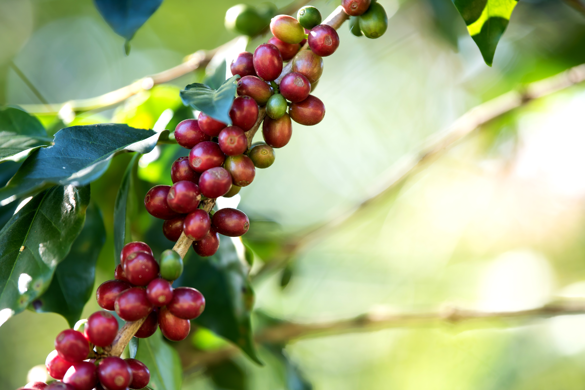
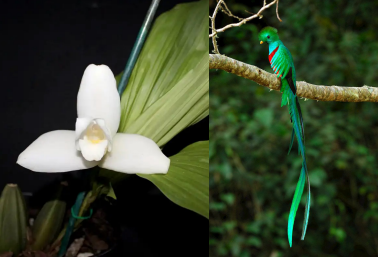
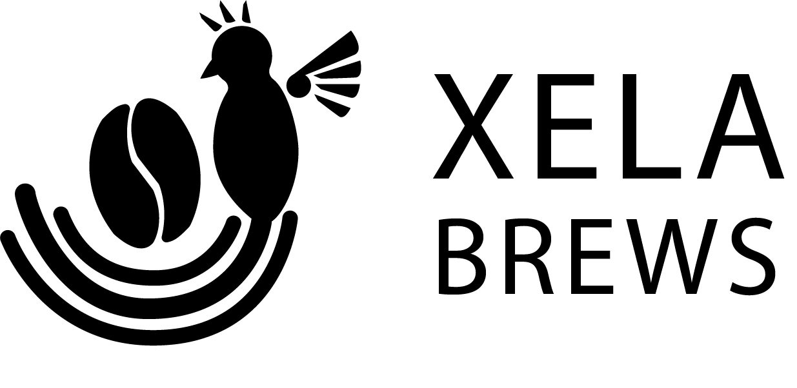
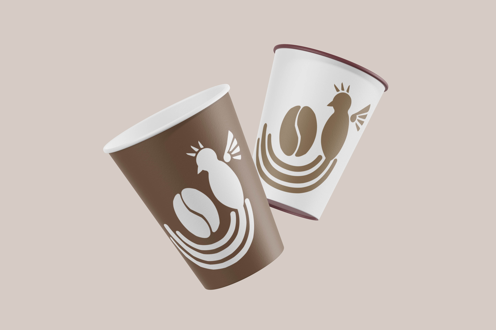
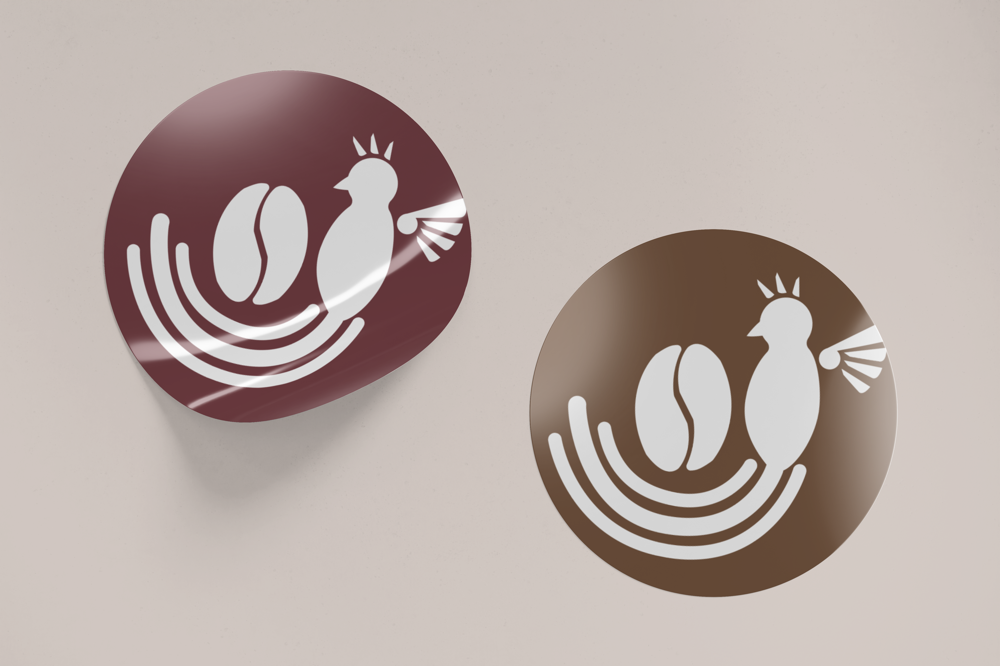
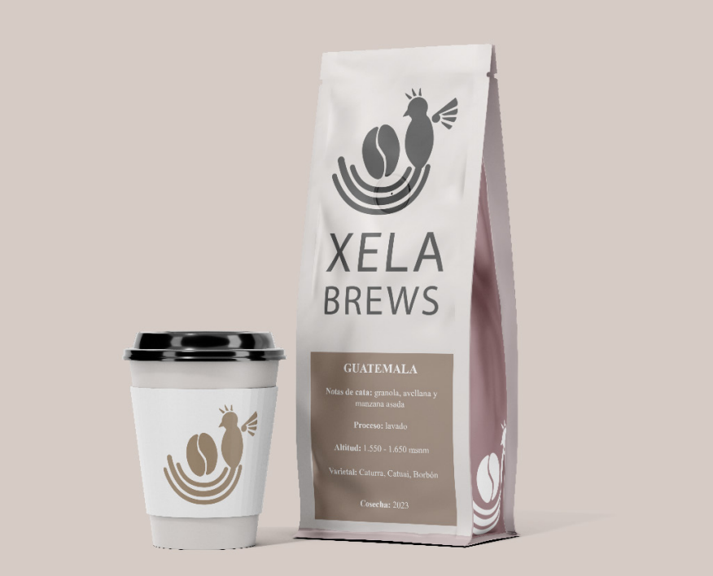

Xela Brews
Xela Brews es una cafetería que busca transmitir la pasión del café de especialidad a las personas. Desde la cereza hasta la semilla del café, en Xela Brews apoyamos una forma sostenible en la producción comprando directamente a los agricultores para poder apreciar su labor y su esfuerzo, siempre asegurando la mejor materia prima.
Para diseñar el logo, la clave consistía en discernir de forma correcta y clara la entidad que representaría la zona de origen de la materia prima, Guatemala. Por ello, se investigaron los elementos característicos de esa zona como el quetzal, la flor monja blanca, el calendario maya y las telas mayas. En cuanto a la paleta de colores de la marca, se eligen principalmente dos: el color del grano de café tostado y el color rojizo terracota de sus cerezas, configurando una paleta de colores que es agradable a la vista por su concordancia temática y sus pigmentos que evocan a la tierra y a la naturaleza.



